正君
之教

依据国家《中学德育大纲》《中小学文明礼仪》《中国学生素养2016》《中小学德育工作指南》（2017）和深圳中学德育目标要求，结合8班学生年龄特点和班级定位，制定8班初二阶段德育发展方向，以此开展和评估班级工作，以期能够增进家校理解与合作，为培养具有现代特质的中学生提供发展性支持。
一、目标描述
总目标：立德树人，全面发展
（一）初步培养全球视野、家国情怀、共情意识
（二）深圳中学学生特质五维度：荣誉、责任、习惯、思维、卓越
（三）培养持之以恒、用心专一、勤敬有为，修己达人之德行
（四）培养组建团队、制定队规、依规办事、协调关系、解决问题的能力，学术品质增强
（五）理解父母师长，初步涉足社会，感受个人社会力、团队影响力
（六）适应初二青春期心理变化，情绪与行为的自控能力有所发展
二、主要内容
总内容：公益养心，学术长才，长跑健身，迎战会考
（一）价值观教育：关于核心价值观的体系构建是一个意义深远的行动，关乎孩子的生命状态和民族的未来。本学期着重构建的是：“恒敬”，持恒专一，敬业修身。
（二）学习小组： 班级是一个学习团队，由仁义礼智信五个学习小组构成，初二还要组建学科学习小组，发扬管理育人、协同育人之功。
（三）学科管理： 把各学科的管理分为四个学段，不同学段进行考核；针对性要强，让每一个学生都在实现个人目标的征途上奔跑。加强个性化，差异化。
（四）综合能力 ：在沟通能力、思维能力、审美能力、表达能力、动手能力、协作能力等方面呈现出不一般的素质。
（五）文化生活： 家长群体将发挥主导作用和资源优势，举行与成长有关的互动活动，深化学习的情趣。合力打造亲子文化，促进学生身心健康发展。
当我们把老师、同学、家长和社会四个主体融合在一起时，我们会发现这是一种十分美好的机缘，我们可以创造更有意思的生存状态。只要我们都充分尊重，十分珍惜，万分努力，就能争得百分的满意。
模式：学习型团队
口号：奋斗点亮自己 光芒照亮他人
结构：班主任----班委会----学习小组-----家长群
团支部
李嘉骏 高悦然
班委会
班长：艺 副班长：曹
学习委员：柯 体育委员：骏 慈 江 宣传委员：悦
文娱委员：玥 生活委员：绚 纪律委员：承
电教管理员：圳
静校管理员：江（协理：承、彩、培）、云（图书馆）
卫生委员：灏（总负责） 承+骏+彩
学习小组：仁（付）、义（昕）、礼（欧）、智（焓）、信（柯）
家委会——
会长：黎女士（悦然妈）
学习部：宇杰妈，悦然妈，容达妈、扬柯妈
文体部：瑾禹妈，静怡妈，毓焓妈
宣传部：婧语妈，哲宇妈
财务部：绚儿妈，宝仪妈
生涯部：华慈妈，谢彤妈，元曦妈
家长义工组
：
仁（瑾禹妈 悦然妈 华慈妈）
义（宝仪妈 静怡妈）礼（绚儿妈 宇杰妈）智（婧语妈 毓焓妈 谢彤妈）信 （容达妈 哲宇妈 扬柯妈）
7月14日上午8：30-9：15，学生处组织线上散学典礼。
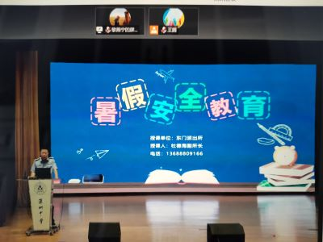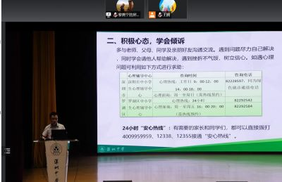
2、清理物品
7月11日上午，学生返校，清理个人物品。
3、期末诊断情况（1-10，总分570；智学网学生端所查等级为1-12的，与下面的等级略有不同）
小组均分： 仁450 义430 礼452 智414 信402
总分A+等（7人）：付、曹、骏、艺、思、柯、圳
A等（11人）：慈、毛、郑、焓、位、玥、婧、欧、曦、栩、淳
语文A+等（3人）：付、悦、毛
A等（16人）：曹、位、思、栩、玥、骏、艺、达、曦、焓、婧、郑、慈、圳、柯、鑫
数学A+等（4人）：柯、思、焓、圳
A等（14人）：玥、轩、欧、骏、婧、位、郑、慈、辉、付、毛、曹、艺、蔡
英语A+等（6人）：思、付、江、曹、位、艺
A等（8人）：骏、曦、婧、栩、达、圳、郑、淳
历史A+等（8人）：骏、付、艺、欧、慈、曹、圳、郑
A等（13人）：柯、思、焓、毛、淳、婧、栩、黄、
桁、白、曦、昕、鑫
物理A+等（6人）：付、骏、慈、柯、艺、曹
A等（12人）：圳、思、焓、欧、毛、婧、郑、玥、谢、位、绚、蔡
道法A+等（6人）：付、柯、曹、玥、骏、艺
A等（18人）：淳、慈、圳、思、曦、毛、达、婧、位、辉、焓、欧、郑、绚、黄、昕、栩、邓
地理A+等（7人）：付、艺、骏、慈、圳、思、曦
A等（13人）：柯、淳、辉、绚、凯、曹、昕、毛、郑、庞、林、玥、江
生物A+等（4人）：付、曹、艺、圳
A等（12人）： 郑、玥、慈、淳、杨浩、骏、焓、婧、柯、绚、毛、轩
向前进同学（24人）：达、蔡、谢、温、豪、沈、思、昕、汪、骏、圳、邓、杨浩、婧、郑、绚、桁、毛、位、艺、悦、曹、付、哲
1、考前教育
7月4日晨，班会课，教学处组织考前教育广播会。
2、校内开展义工活动（第11、12次7月5、6日）
 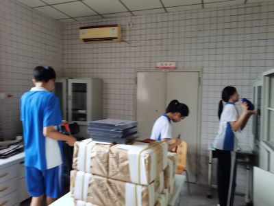
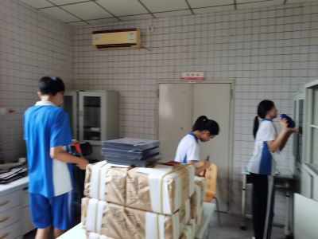
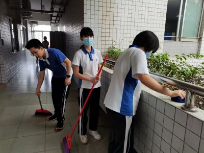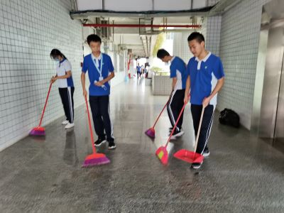
3、疫情停课
7月7、8两天，原定期末考试，因突发疫情停课
4、线上期末诊断
7月9、10两天，学生居家在线参加期末诊断，家长协助。
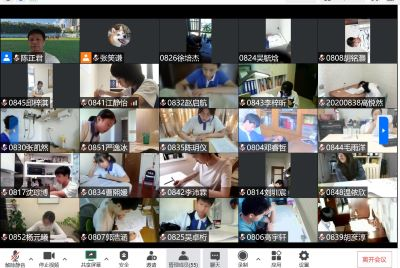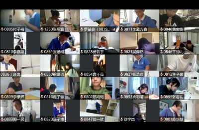
5、综合评价结束
6月28日下午，学生参加会考。
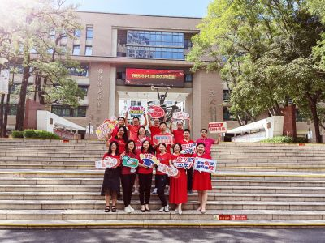
 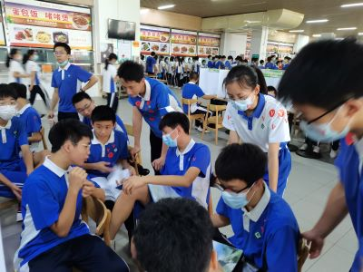
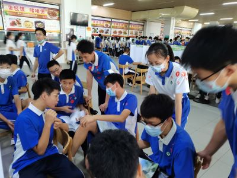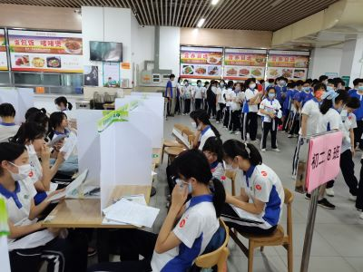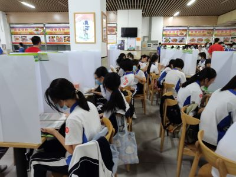
2、校内开展义工活动（第9、10次6月30日，7月1日）
 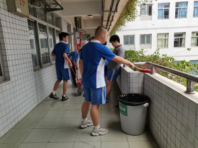
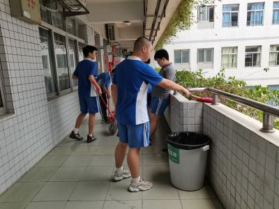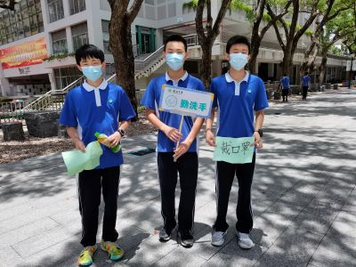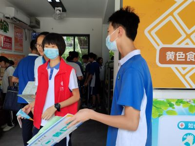
3、学期评优
利用自习课组织学生投票，选出三好、优干、特别奖等
三好学生：曹 艺 骏 云 毛
优秀班干：悦 慈 圳
创新思维奖： 欧 柯 焓 曦
好习惯奖： 曹 付 位 昕
自我超越奖： 慈 玥 宝 淳
特长生奖： 昶 语 绚 艺
热心公益奖： 灏 骏 彩 江
4、期末英语听说
6月20日晨，班会课上，学生自行制定期末计划（目标）
2、会考考前教育
6月24日晨，教学处组织召开广播会，进行会考前教育。
3、校内开展义工活动（第8次6月23日）
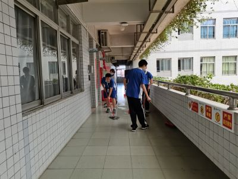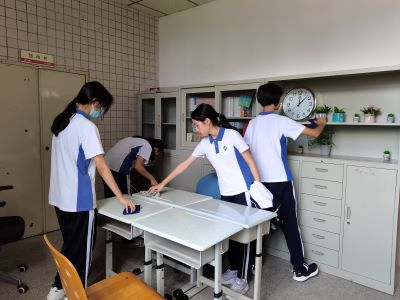
4、会考工作
6月24日，学生签诚信承诺书，发准考证和健康承诺书
5、防疫工作
在家委的大力协助下，收集学生同住人信息，每天进行学生及同住人健康监测报告，每天核酸。
6月13日班会课，国检动员会。
2、国检
6月14日，10位同学被抽中（随机）参加国检
3、论语诵读
6月16日16：45-17：30，论语诵读第6期。付主持，付记录。
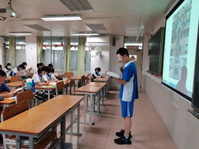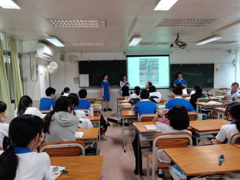
4、校内开展义工活动（第7次6月17日）
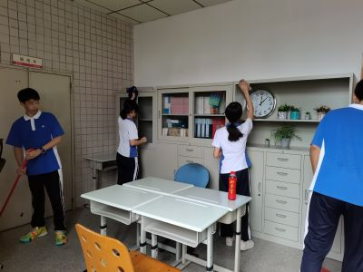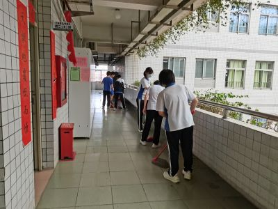
5、个案处理
（1）戏涂墙壁，已处理
（2）误动物品，已澄清
6、生地期末考试
6月17日下午4：55-5：15，完成生地考试。
7、会考前防疫收紧
每日一检
1、线上禁毒教育：心有边界 坚守自我
6月6日班会课，线上观看视频。
2、线上学习（周一至周四）
6月6-9日，线上学习。
3、校内开展义工活动（第6次6月10日）
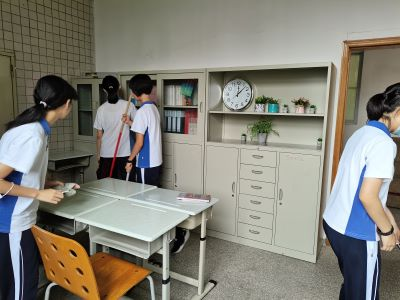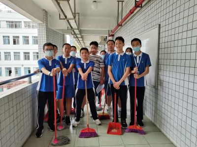
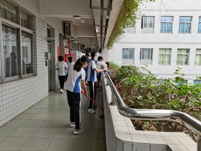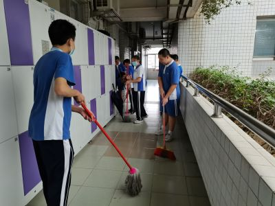
通过《特赦1959》视频片段，梳理“抗美援朝”取得胜利的原因，进而将其精神引入备战会考之中。
2、学校组织“包粽子”活动
6月1日中午，学校组织包粽子活动，洋、怡参加。
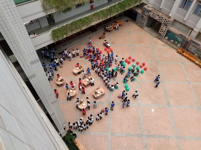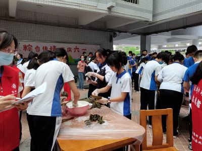
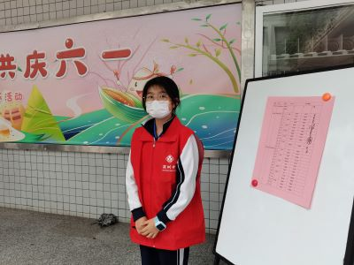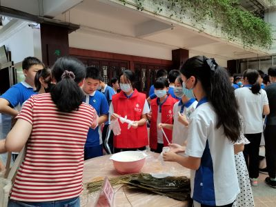
3、校内开展义工活动（第5次6月2日）
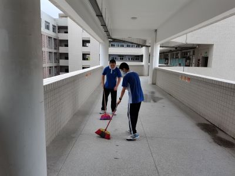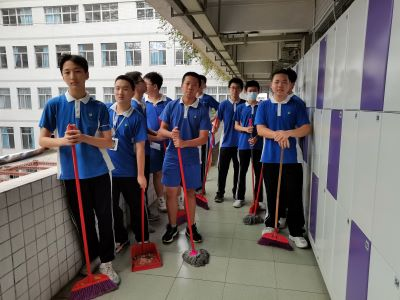
4、论语诵读
6月2日4：45-5：30，论语诵读第5期。丁主持，白记录。
5、班务处理
（1）大扫除小组安排问题
（2）学生交往问题
（3）静校纪律问题
（4）早上考勤问题
（5）学风问题
6、评教工作启动
2、生物实验操作考核
5月29日上午，生物实验操作考核。
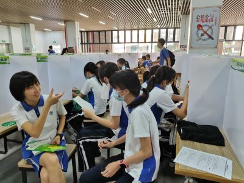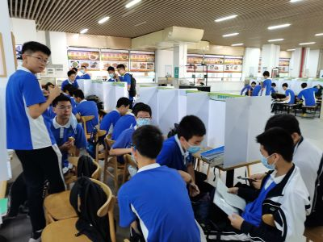
3、生物实验操作模拟
5月25日中午，曾老师指导实验操作训练。
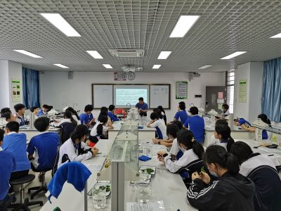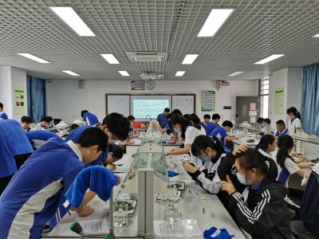
4、论语诵读
5月26日4：45-5：45，论语诵读第4期。丁主持，郭记录。
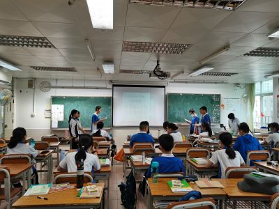
5月16日，按年级安排，组织了校园安全教育。
2、论语诵读
5月19日4：45-5：45，论语诵读第3期。郭主持，云记录。
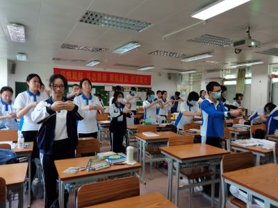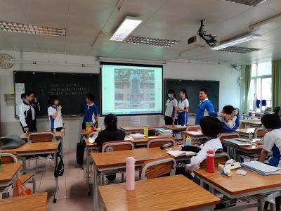
3、《钢铁是怎样炼成的》课堂小讲
自5月9日语文课上前5分钟安排同学分享阅读感受。
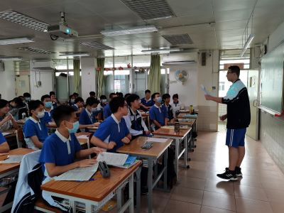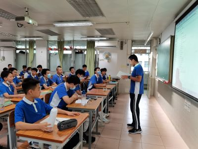
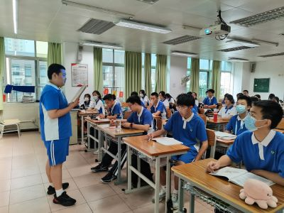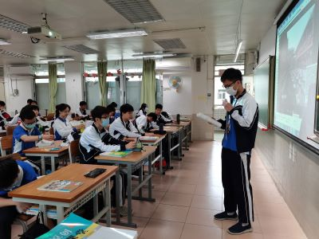
4、共赏语音乐作品
音乐课上，江老师指导大家一起欣赏语同学的音乐作品。
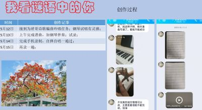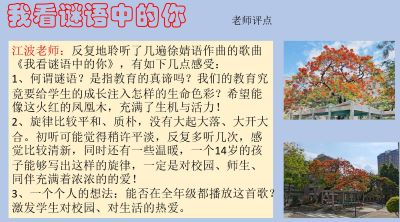
5、校内开展义工活动（第4次5月20日）
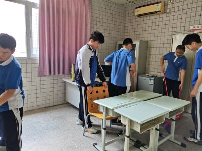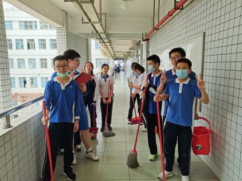
6、线上家长会
5月20日晚7：30-9：40，腾讯会议，家长会：保持定力 迎战会考
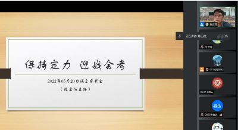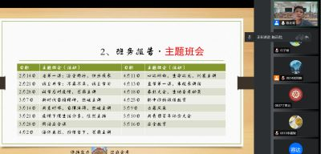
5月9日晨，班会课。
2、收看共青团百年纪念大会
5月10日上午10点，收看纪念大会，预备团员艺、悦、骏向团委提交观看心得报告。
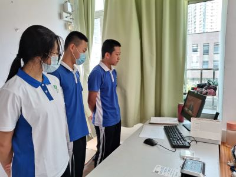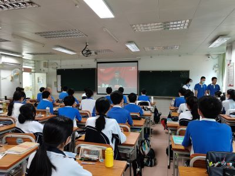
3、阳光体育
5月9日下午放学后，学生做完核酸采样，开始阳光体育活动。
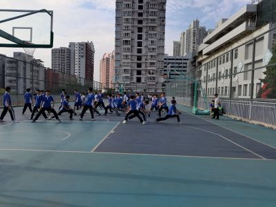
4、板报
5、大扫除

6、线上论语诵读
5月12日下午4：00-5：00，腾讯会议，线上诵读，郭主持，白记录。
7、音乐创作
5月12-14日，语同学在家独自进行了编曲、伴奏和演唱等音乐创作活动，虽是初试，却已得到相关专业人士的肯定。
我看谜语中的你
4月30日-5月4日，五一假期
2、期中诊断报告（1-10，折后总分570）
小组均分：
仁442.8 义423.8 礼448.6 智394.7 信404.2
总分A+等（6人）：裕、曹、柯、艺、慈、玥
A等（14人）：焓、栩、昶、骏、毛、曦、淳、圳、位、欧、思、郑、婧、轩
语文A+等（8人）：裕、艺、玥、曹、栩、毛、思、婧
A等（8人）：慈、焓、昶、骏、郑、江、哲宇、位
数学A+等（5人）：裕、欧、柯、慈、曦
A等（12人）：玥、焓、昶、艺、圳、曹、栩、毛、轩、骏、位、庞
英语A+等（4人）：曹、骏、曦、思
A等（13人）：位、艺、圳、柯、江、焓、裕、栩、淳、郑、玥、庞、毛
历史A+等（6人）：曹、淳、圳、裕、柯、焓
A等（10人）：玥、艺、轩、白、慈、骏、郑、昶、思、灏
物理A+等（4人）：曹、柯、慈、裕
A等（16人）：玥、婧、艺、焓、淳、毛、昕、位、昶、栩、欧、骏、绚、谢、郑、庞
道法A+等（8人）：裕、慈、柯、玥、骏、艺、位、曦
A等（14人）：曹、思、焓、庞、轩、郑、昶、欧、栩、毛、淳、哲宇、圳、灏
地理A+等（10人）：曹、裕、艺、白、慈、淳、思、位、庞、辉
A等（12人）： 柯、玥、轩、栩、严、曦、哲宇、圳、焓、骏、郑、毛
生物A+等（5人）：曹、裕、淳、艺、栩
A等（8人）： 柯、慈、位、昶、圳、曦、思、江
向前进的同学（23人）：宝、淳、郑、严、毛、玥、蔡、孙、
培、浩宸、卓、曦、袁、轩、沛、焓、曹、姚、慈、昶、柯、白、悦
3、英语听说考试
5月6日早上，英语听说考试。
4、校内开展义工活动（第3次5月6日）

5、《论语》诵读拓展课程启动
5月7日下午4：55-5：30，本班论语诵读拓展课程启动，助教白同学主持。先学拜礼，再读书一篇，接着辩论，最后手工。本次活动记录由曹同学整理。
6、静校
5月6日中午，静校时有同学违规，启动了班级内部诫勉谈话程序。
1、考前教育
4月25日班会课，考前诚信教育。
2、考前复习
3、大扫除
4月27日，信组大扫除，布置考场。
4、校内开展义工活动（第2次4月27日）
5、安全教育
4月29日上午考试结束后，进行了安全教育。
6、五一放假
1、年级表彰
4月18日班会课，年级召开表彰大会。地生会考备战动员。
2、生地会考报名启动
（1）告知书
（2）报名表
（3）缴费
（4）登记表确认
3、校内开展义工活动（第1次4月22日）
4、疫时生活小记
1、复课开学典礼
4月13日，9：30-10：30，本学期线下教学启动，学校组织开学典礼，朱校长莅临讲话。年级统一进行“开学第一课”。
2、线上主题班会
4月11日晨，年级统一线上主题班会，“心之所向，生命之光”，由圳主讲。
3、复学后各项工作稳步有序推进
（1）每天下午放学后做核酸
（2）仁组完成大扫除
（3）电脑随机排座位（单人单座）
（4）静校45人
（5）新作息时间

4、收看反恐专题教育直播
5、防溺水安全教育
6、家校合作
（1）提醒孩子做核酸
（2）告知新课表
（3）了解孩子开学状态
（4）调整孩子作息
（5）倡导家庭运动
4月2日（周六调周一）早上，学校组织各班召开线上主题班会，主题是缅怀先烈，珍惜当下。会议由班长艺同学主讲。慈、昕、欧、良、民分别讲述了一个有关英烈的故事。
2、清明节
3-5号，清明节放假
3、准备返校
为13号返校做准备
（1）4月9日晚7：30-8:00，召开线上家长会，主题是“齐心协力，重新启航”。
（2）4月9日晚9：00，调查落实异常同学。
（3）4月10日，学生和共同居住人启动核酸检测，上报。

3月28日8：00-45，腾讯专家主讲网络安全课。
2、班委会
3月31日晚上，部分班委和同学（慈、辉、付、昕、圳、姚、骏、栩、绚、云、杰、沈、林）在班长艺同学的组织下，对近期网课进行了总结，提出了一些问题。班干部的组织与管理能力在提升。
3、家委会
4月1日晚，家委组织各组家长研讨网课期间的亲子成长问题：如何让孩子在相对极端的情境下依然能够保持相对稳定的成长姿态，能够让家长放心？
收到意见近30条，将会归类择要处理。
4、我班荣获“先进班集体”称号
学校公众号：23个先进班集体新鲜出炉
5、新生加盟
欢迎栩同学。
1、主题班会：疫情下的慢生活分享
由宣委悦然同学主持。包括：线上音乐会、体育、家务、手工、绘画、烘培等活动展示。
2、班级公众号：疫情下的慢生活分享
3、“慢生活”展示

4、网课管理
（1）每日反馈
（2）晚间启动答疑
3月14日晨，线上教室，由熙媛同学主讲。

2、深圳启动慢生活
3月14日至3月20日，深圳为应对疫情突变，启动慢生活方式。
班委策划“文化”活动，由宣委悦然同学组织。
3、线上家长会
3月18日晚，按学校要求，组织全体家长，线上传达教育局有关防疫通知。
4、家委活动
（1）一线工作
（2）义工活动
（3）配合防疫
3月7日，线上教室。由媛同学主讲。
2、听读《傅雷家书》（跳读版）
为方便学生熟悉名著，特挑选重点部分朗读，发至相关网站。
《傅雷家书》（东皋清流跳读版）
3、加强网课管理
1、线上班会
2月28日晨，线上班会，主题是科学应对疫情，高效在线学习。班长艺同学主持。
2、班委讨论网课开启摄像头的问题
3、网课期间体育锻炼
4、网课期间家务劳动
5、家委协助
（1）防疫情况
（2）网课学习调查
（3）家庭劳动教育
（4）体育锻炼
（5）心理健康辅导
1、线上开学（班会课）
2022年2月21日早上8：25，新学期线上教学启动，班会主题：不离不弃，线上学习。
2、网课
每天6次课，每节课时30分钟
科目：语、数、英、物、地、生、道法、体育、音美欣赏、心理健康
平台：腾讯会议
3、线上班委会：关于是否要开启摄像头的问题
2月26日晚，班委组织了线上讨论，统一了意见。班长主持。
4、防疫——三天三检
2月25日-27日，上报核酸检测情况，包括同住人。
家委会组织有力，全员检测达标
1、广东开学第一课（线上）
2月14日上午9：00-10：00，线上直播，主题是“安全同行，快乐成长”。

2、防疫
（1）开学前14天学生健康状况监测每日通报（2月7日开始）
（2）离深学生情况登记
初二：公益养心 学术长才 长跑健身 迎战会考
czjszsz@qq.com